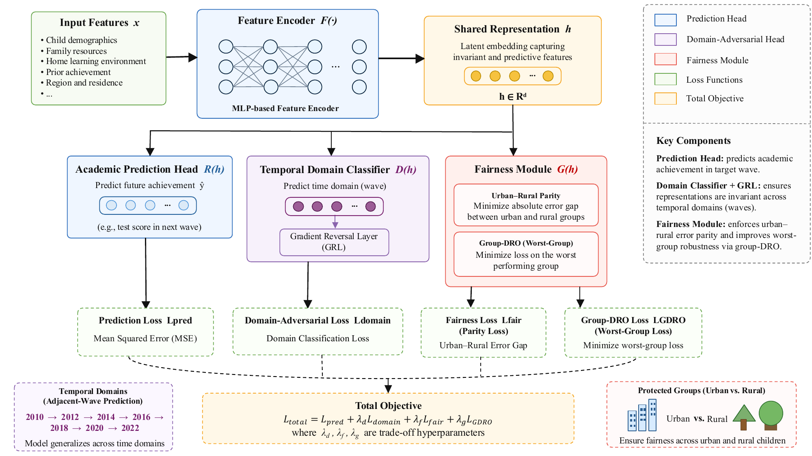
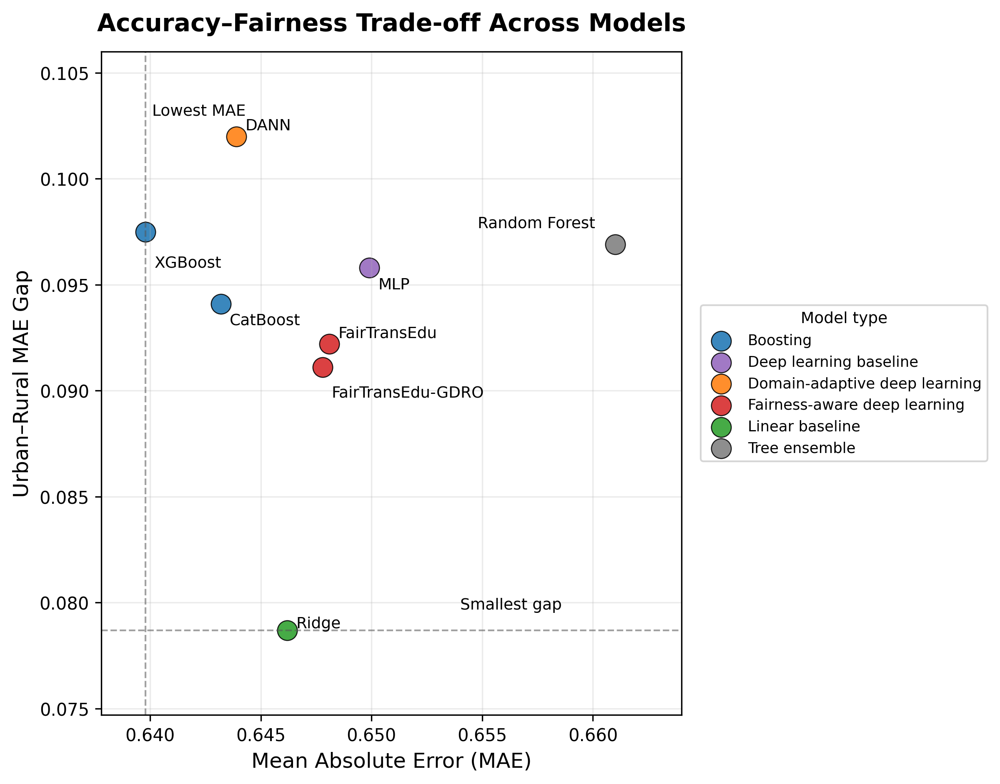
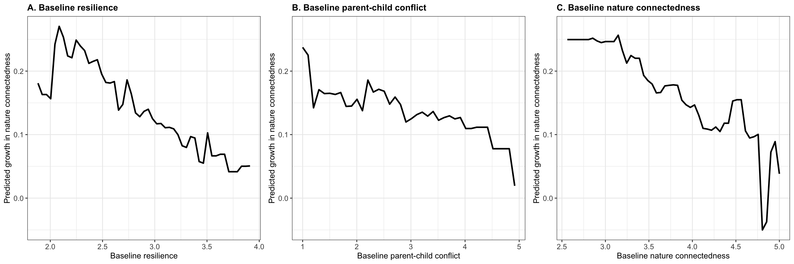

Quantitative
- SEM · CFA · mediation · moderation
- CLPM · LGCM · longitudinal modeling
- Machine learning · deep learning
- Fairness evaluation · SHAP
Child development × quantitative methods
I work with long datasets and messy questions about how children learn, grow, and experience inequality.

About
I did not begin university with a perfectly defined research plan.
My interest in research grew gradually—from trying to understand how children develop, to learning what happens when real data refuses to behave like the examples in a textbook. Somewhere between cleaning questionnaires, comparing longitudinal models, and rewriting an argument for the fifth time, research became something I genuinely wanted to keep doing.
I now work across early childhood development and educational AI. To me, they share the same problem: a result can look convincing while missing the context around it—family relationships, classrooms, time, place, or inequality. I care less about whether a model looks impressive and more about whether it tells us something honest.
What I use
I am interested in methods because they let us ask better questions—not because a complicated model is automatically a better one.
Representative work
Two projects that best represent how I connect developmental questions with longitudinal and computational methods.
Using seven waves of CFPS data, this study moves beyond a single accuracy score. I test whether models transfer to future survey waves, whether errors are distributed fairly across urban and rural students, and whether the explanations offered by SHAP remain stable. The aim is to treat temporal robustness and subgroup fairness as core requirements—not optional checks after a model is built.
View publication details →

This project treats nature connectedness as a developmental environmental resource rather than a fixed preference. Using longitudinal growth models, it examines how children’s connection with nature changes alongside psychological resilience and parent–child conflict. The focus is not only on whether these factors are related at one moment, but on how their trajectories unfold together over time.
View publication details →

{kind=link}
{kind=link}
{kind=link}